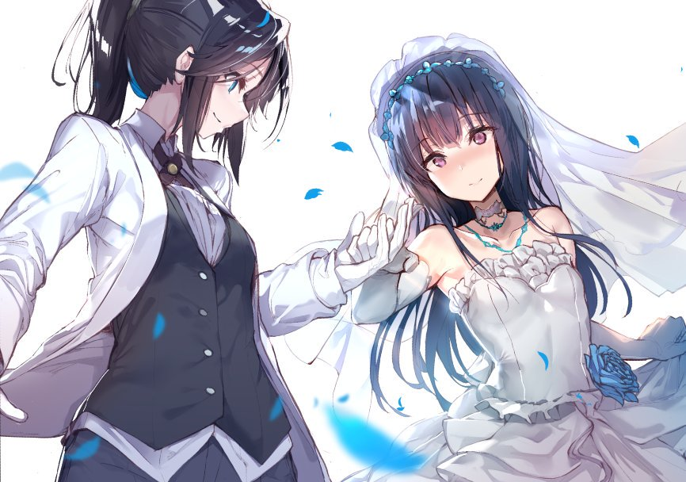
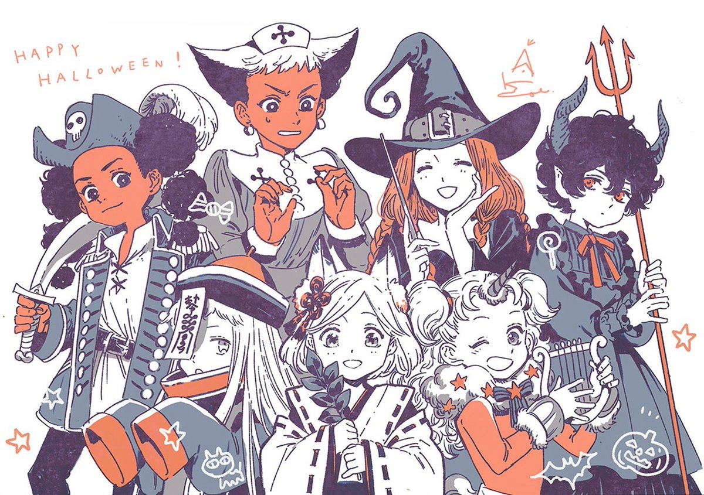

Ya hay muchas series disponibles por si quereis ir a verlas, dentro de poco subire todo lo que queda de Made in Abyss + la película.

Ya hay muchas series disponibles por si quereis ir a verlas, dentro de poco subire todo lo que queda de Made in Abyss + la película.
No tengo mucho que decir, simplemente estoy aqui acabando cosas. He añadido una galeria de imagenes que usaré para poner las ilustraciones que mas me gusten de las cosas que mas me gusten. Hope u enjoy it!
Pd: Aqui teneis un fanart de Yui fan de Nirvana.
La pelicula de K-on! ya esta disponible (id a verla, es la mejor pelicula que existe). También he añadido un pequeño pie de pagina con un correo al cual se me puede hablar.
A partir de ahora el anime de Haruhi Suzumiya estará disponible para visualizar en la parte de catalogo, de momento no estan todos los capitulos pero de aqui a un futuro estaran todos disponibles.
Este es el primer post de la pagina, son las 2 de la mañana. Solo venia aqui para desear a todo el mundo un feliz mes de octubre. Tambien es importante que veais la foto de abajo, es de Atelier of Witch Hat, que por cierto deberiais ir a leer ;)
Imagenes de la galeria.